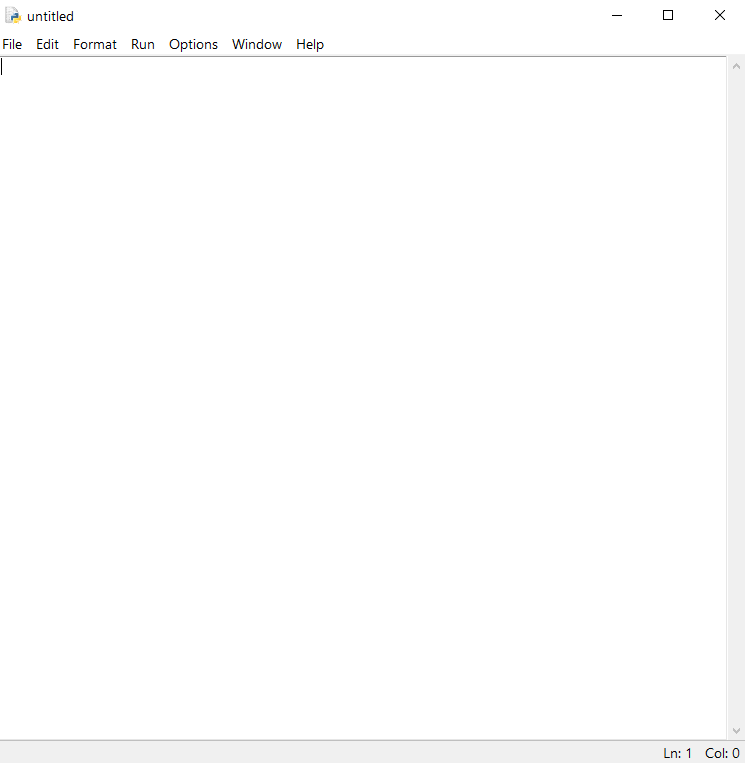
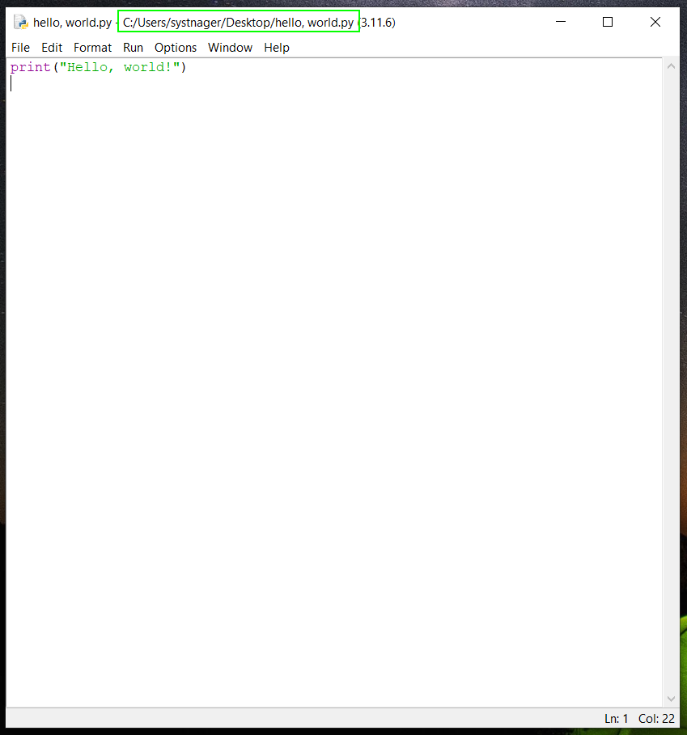
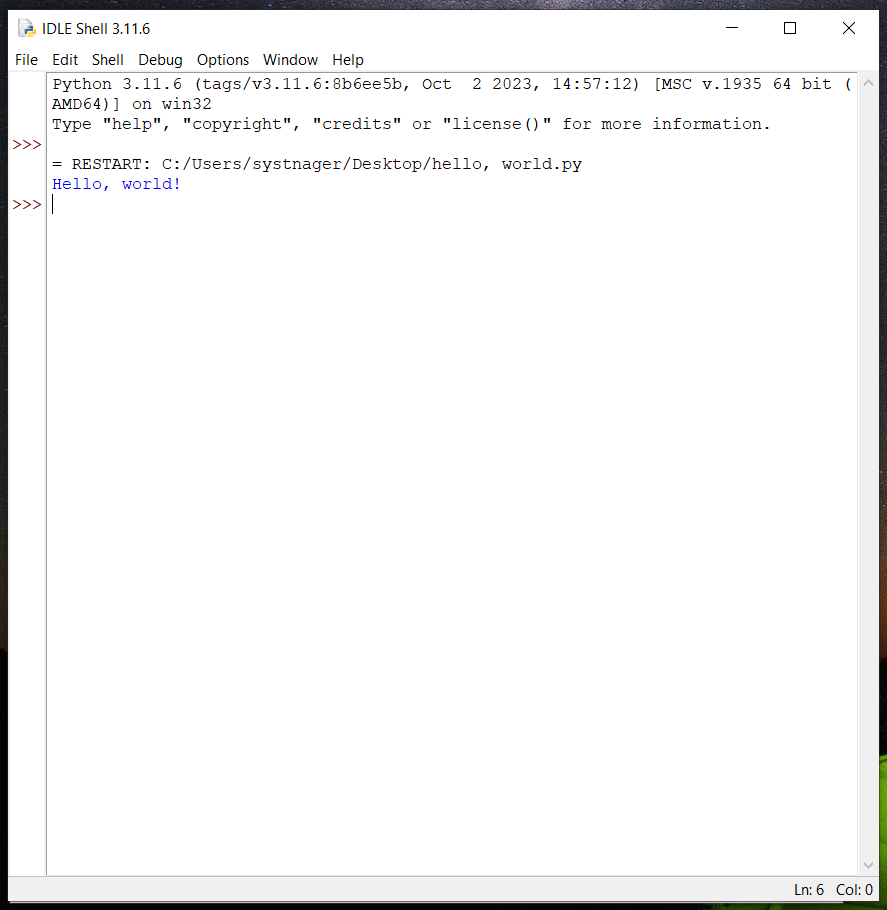

У меню пуск можна знайти папку Python. У ній нас поки цікавить лише IDLE. Запусти і на англійській мові (це важливо) натисни cntr + n. Відкриється нове вікно. Саме тут ми будемо писати код для початку

Далі введи наступний код:
print("Hello, world!")
Після натисни cntr + s та збережи файл де тобі буде зручніше, наприклад: hello.py на робочому столі. Після натисни F5
 Як бачимо, ми вказали, що хочемо надрукувати текст Hello, world у консоль і Python це зробив! Також ми можемо надрукувати будь який інший текст і друкувати навіть не один раз! Встав наступний код
print("Hello, world!")
print("I`m Python3!")
print("Nice to meet you!")
print("How are you?")